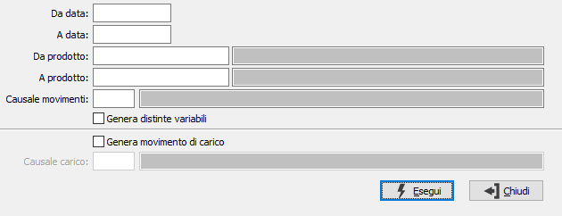

Generazione movimenti da distinta base
La procedura consente di generare i movimenti di magazzino relativi ai componenti di prodotti che hanno una distinta base e che hanno generato in precedenza il magazzino. La causale del movimento deve essere abilitata alla gestione della distinta base.

DA DATA: data del movimento da cui deve iniziare l’analisi dei movimenti di magazzino. Confermando a vuoto, l’analisi inizia con il primo movimento valido.
A DATA: data del movimento con cui si desidera terminare l’analisi dei movimenti di magazzino. Confermando a vuoto, l’analisi si conclude con l'ultimo movimento valido.
DA PRODOTTO: eventuale codice dell'articolo, presente in anagrafica Prodotti, da cui si desidera iniziare la selezione dei movimenti di magazzino. Confermando a vuoto, la selezione inizia con il primo prodotto valido. Sul campo è attiva la ricerca (F9) sull’anagrafica prodotti.
A PRODOTTO: eventuale codice dell'articolo, presente in anagrafica Prodotti, a cui si desidera terminare la selezione dei movimenti di magazzino. Confermando a vuoto, la selezione termina con l’ultimo valido. Sul campo è attiva la ricerca (F9) sull’anagrafica prodotti.
CAUSALE: codice della causale di magazzino a cui si vuole restringere la generazione. Sul campo è attiva la ricerca (F9) sulla tabella Causali di magazzino.
GENERA DISTINTE VARIABILI: definisce se devono essere generati i movimenti nel caso in cui il prodotto abbia una distinta base variabile (casella con segno di spunta). Nel si spunti la casella il movimento sarà generato con il componente base.
GENERA MOVIMENTO DI CARICO: Se spuntato consente la generazione automatica del movimento di carico del prodotto per cui saranno generati i movimenti di scarico dei componenti della distinta, sarà utilizzata la causale inserita nel campo sottostante.
CAUSALE CARICO: codice della causale di magazzino utilizzata per il movimento di carico. Sul campo è attiva la ricerca (F9) sulla tabella Causali di magazzino.